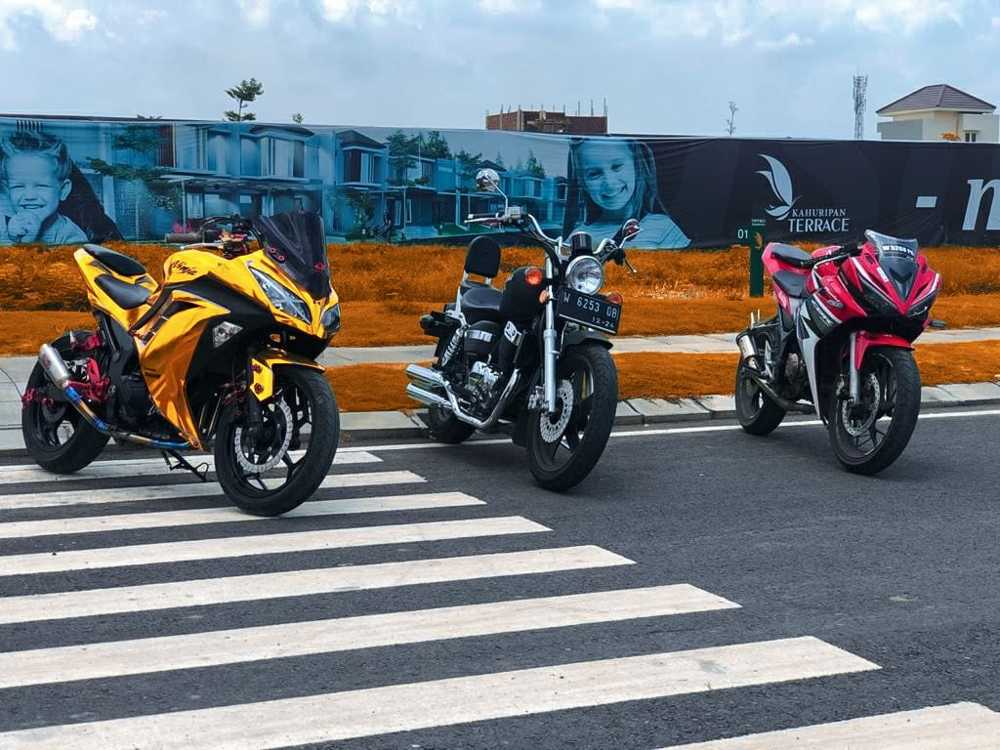

Project
My recent project

Photography
The photo above is a photo taken using a cellphone camera and edited using Adobe Lightroom. for its location at Kahuripan Housing Sidoarjo - East Java.

Photography
The photo above is a photo taken using a cellphone camera and edited using Adobe Lightroom. for its location at Kahuripan Housing Sidoarjo - East Java.
Photography
The photo above is a photo taken using a cellphone camera and edited using Adobe Lightroom. for its location at Kahuripan Housing Sidoarjo - East Java.
Contact
My Social Media :
0895340146564
royhan170402@gmail.com
royhanr_